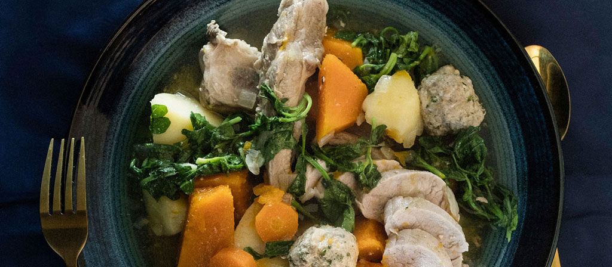

Enjoy a rich and unique experience
Explore and Savour the Aotearoa culinery excellence
We aim to introduce and invite visitors to experience the rich and diverse world of iconic New Zealand cuisine. From traditional Māori delicacies to locally-sourced, fresh ingredients unique to Aotearoa, our goal is to share the flavors and cultural significance of New Zealand’s beloved foods. Whether you’re a local or a visitor, we hope to inspire you to explore and savour the culinary heritage that makes New Zealand a truly remarkable destination.
The indigenous cuisine of Aotearoa, shaped by Māori culture, features a rich variety of ingredients and traditional cooking methods that honor the land and sea. The hāngi, an earth-cooked meal, includes meats and root vegetables like kūmara, while kaimoana (seafood) such as pāua, kina, and tītī bring unique coastal flavors to the table. Native plants like puha, used in hearty boil-ups, and edible seaweed like karengo add distinct local tastes, alongside rewena, a traditional Māori bread made with a fermented potato starter. These dishes reflect values of manaakitanga (hospitality) and kaitiakitanga (guardianship), emphasizing respect for natural resources. By preserving these foods, Māori culture sustains its identity and shares its rich culinary heritage.
A Kiwi boil-up is a traditional New Zealand meal made by simmering pork bones or other meat, along with root vegetables like kūmara (sweet potato) and potatoes, with hearty greens like pūhā (sow thistle) or watercress. The dish is flavorful, warm, and comforting, capturing authentic Kiwi flavors with indigenous ingredients.